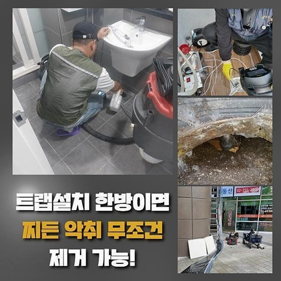
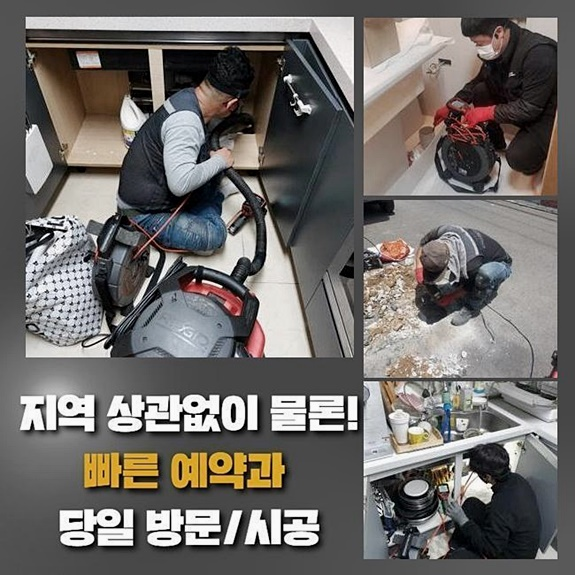
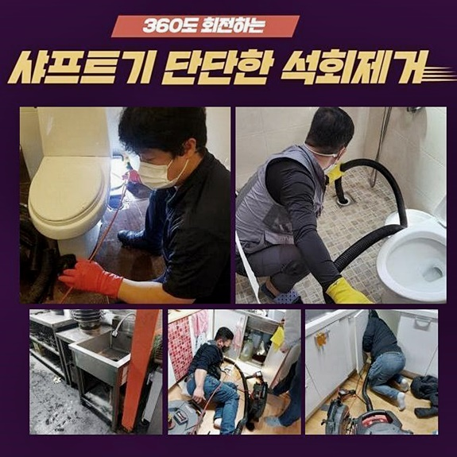
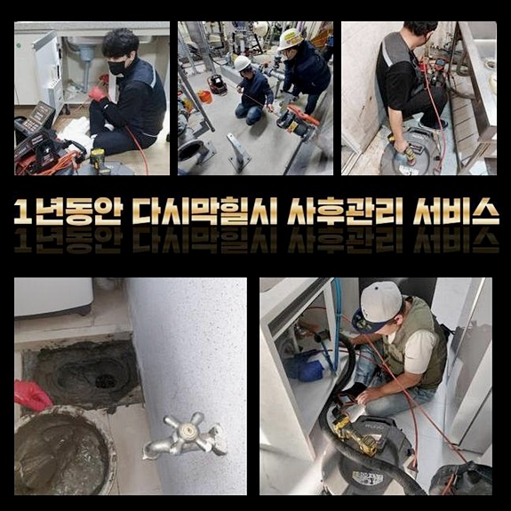
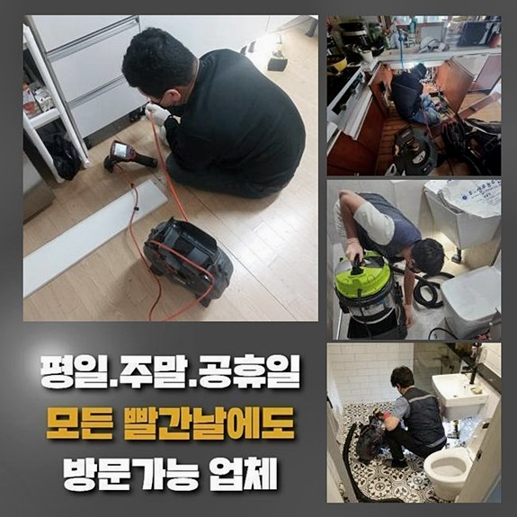
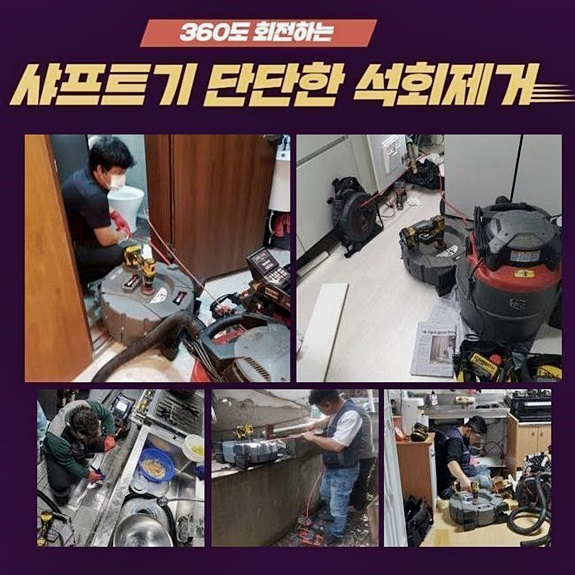
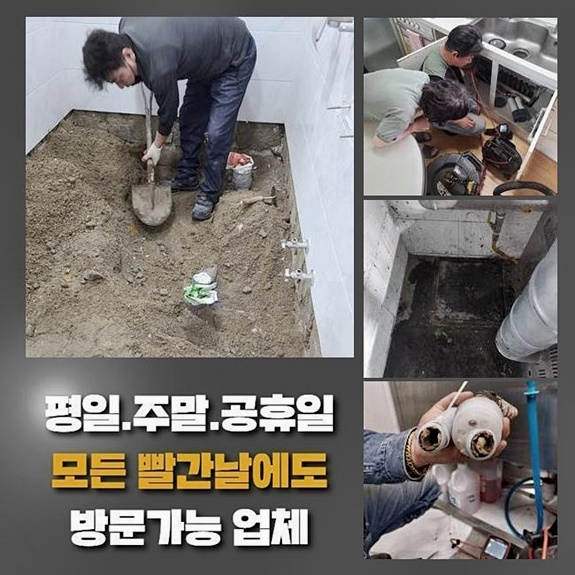

🏠 노원구 하계동싱크대역류 중계본동 하수구뚫어주는업체 출장수리
용인 싱크대막힘 전문 시공 후기

📋 작업 개요
- 위치: 용인
- 서비스 유형: 싱크대막힘, 하수구막힘, 배관막힘, 누수수리, 역류해결, 뚫는업체, 배관청소, 고압세척
- 작업 일시: 2024. 9. 19. 12:42
- 업체명: 하수구수사대 (010-5615-2118)
🔍 문제 상황
노원구 하계동싱크대역류 중계본동 하수구뚫어주는업체 출장수리
내방한 물 안빠짐 장소에선 구조 시공을 이행하고 있으셨는데 곳곳을 살피니 하수관은 바깥으로 돌출되어 있었으므로 진단 시 수월하게 진행되었습니다
원인은 안의 하수도와 메인관로가 접합한 부분에서 발생되었습니다
배관끼리의 접합위치에 잔여물이 쌓이게되어 통수가 불가해 문제들이 나타난건데요
안정적으로 증상을 바로 잡고자 내시경카메라를 이용해서 잔해의 누적된 부위와 본 뒤 수리를 시작해주었어요
저희들은 내시경장비를 운용해서 확실한 점검을 이행하며 이것을 기초로하여 막혀버린 하수관을 뚫어드려요
전반적인 세척에 대하여 내용들이 궁금할 땐 저희들께 상담을 진행해보세요
점심 전에 저희를 찾으셔서 계신 곳으로 조속히 도착했는데요
고객께 피해 상태들에 대해서 많은 설명들을 들었어요
그러나 증상들이 발발한지 긴 기간이 지난것으로 보였습니다 심지어 가게들도 밀집해있어서 불편을 겪는 곳도 많았죠
건축물 내 배수가 안되는것을 넘어서 건축물의 문제로 사면초가의 상태였어요
물이 안빠지는 사태는 전체 운영에서도 연관이 크므로 빠른 해결이 요구되었습니다
하수구막힘 증상의 기조는 구조의 오류나 노후도 등의 다양한 이유로 생겨나죠
그러므로 시발점을 파악하고자하면 다양한 사항을 염두에 두어야 하겠습니다 확실한 결함위치를 신속히 알아냈는데 바깥의 배수관인 것으로 밝혀졌어요

🔎 원인 분석
💡 전문가 진단: 정밀 진단 장비를 사용하여 슬러지의 고착 여부를 판명하고 타격/세척 작업을 실시했습니다.
하수도나 하수 시스템에서 생기는 물빠짐 결함들은 발생 스팟도 한가지로 특정할 수 없어요
고객님들과 연락과정을 거친뒤 방문하면 주거지를 비롯하여 상업시설 등 증상이 생겨난 스팟은 참 다양한데요
증상도 특정할 수 없는게 이처럼 배수관정체 문제들로서 전문업체의 대응이 없인 고쳐내는게 만만치 않아요
배관으로 하수가 안빠져서 시중에서 구매가능한 배관 전용 제품들을 사용하신 적이 있으실거에요 반드시 위와같은 제품들을 이용하는것이 옳지 못하다는 것은 아니겠으나 증상이 심할 경우에 반대로 작업기간이 늘어날 가능성이 있답니다
이럴때라면 믿고 도움을 청할 전문인이 필요할테죠
저희들은 날짜에 상관없이 공휴일일지라도 작업해드리고 있어요
도움을 청하시면 곧바로 내방하기에 지리적 환경에 제한들이 존재하지 않아요
아침부터 저녁일지라도 연락한다면 방문드려요
내부를 살피니 이물질의 축적률이 낮아 석션장비로 무리없이 흡입했어요
그러던 와중에 화장실공간에서 역류증상이 발발해 고객분이 현 증상을 알려주셨죠
바닥부분은 고압 석션으로 무리없이 이물제거를 실시해주었고 문제될 만한 요소없이 진행시켰어요
곧장 욕실로 자리를 옮겨 내시경을 꺼내 메인으로 뻗은 지점도 관찰했습니다
곳곳을 살피니 명확히 된 위치를 빨리 알아내어 증세를 바로 세웠고 하수관의 내부를 열어보니 심했던 상황들을 관찰했죠
그리고 부차적 증세로 악취들도 풍겨나왔던 상태로서 겉으로 보아도 심각수준을 인지했습니다

🔧 작업 과정
첫번째로 바닥라인 청소를 진행할 생각으로 장비를 꺼내 청소를 진행하고 바깥으로 이동하여 더욱 누적된 관찰 목적으로 내시경장치를 사용했습니다
생각한대로 깊이 들어갈수록 고착된 잔해들이 축적된 형상을 볼 수 있었답니다
문제 스팟을 찾아 증세를 완화시키기위해 적당한 해결책을 실시할 계획들을 수립했어요
고객분에게도 이러한 상태를 말씀드리고 곧장 샤프트장치의 운용을 시작해주었어요
위의 장비로 말씀드리면 사슬들을 신속히 회전시켜 굳어버린 이물들을 제거시켜주는 장비라고 할 수 있어요
저희의 전문가들은 내시경기기의 이용과 더불어 세척절차도 실시하고자 동그란 모양의 사슬을 사용해주었죠
서둘러 스케일링을 이행하니 흡착되었던 잔해물이 벽면쪽에서 제거되기 실시했습니다
오래도록 오염도가 상승했던 장소인지라 수월한 청소가 쉽지않은 상황이였죠
샤프트기기로 굳어진 이물들을 분쇄해주고 석션장치로 잔해들을 흡입하여 하수관로를 심층부부터 뚫었는데요
혹시라도 보여지는 구간만 작업해주면 다시금 통수오류 사태가 벌어져요
이같이 시발점을 찾는게 우선이기때문에 저희업체에선 명확히 문제들을 바로 잡지 않는다면 일체의 요금들을 청구하지 않죠
해당 사항은 여러분들과의 믿음부분들로 안정성을 기초로하여 작업해드립니다
의뢰자들께서는 수리가 안되는 사태에 비용들만 쓰게되는 손해들을 감수하지 않으셔도 되요
내시경기기로 확인한 결과 엘보라인까지 슬러지화 된 흡착물들이 축적되었어요
각 라인에 자리한 이물질은 날이 갈수록 강도가 세지는 특성이 있죠
이를 뻥 클리너등으로는` 깨끗하게 제거하는게 쉽지않아 전문가용 기기들을 이용하는것이 상책입니다
곧바로 석션장비를 배관과 연결시키고 압력 차를 이용해 부유물들까지 제거해주었는데요
고객님도 이것과같이 엄청 많은 오염원들이 쌓여버리게된건지 생각하지 못했다고 당황을 금치 못하셨습니다
배수관 표면은 멀쩡해 누수문제까지는 관찰되지 않았지만 이대로 방임적인 태도로 일관했다면 피해들이 이만저만이 아니였을겁니다
흡입기로 잔해들을 세척한 후 내시경카메라들로 확인한 결과 공간이 확실히 확인되었어요
혹시라도 배수오류가 재차 발생되어도 걱정은 내려놓으세요
저희의 전문가들은 1년이라는 시간동안 무상보증을 수행해요
저희들이 작업하고서 동일하게 재발되었을 시 비용이 들지않고 애프터서비스를 실시합니다


✅ 작업 완료
이전의 세척과 똑같이 전문방식과 장치가 사용되니 편히 전화하세요!
주위의 이물까지 저희들이 정리하며 주위도 깨끗히 석션장치로 제거시켰습니다
관로나 배수구는 외부적인 사안들도 있겠으나 관리부재로 인해 발생될 가능성이 많아요
배수 관련 사안을 관리해주며 쓴다면 올바른 배수 과정을 유지시킬 수 있죠
평소에 쓰시면서 시도가능한 관리방법과 연관하여 하나하나 설명드렸죠
배수가 안되는 증상들을 마주한 의뢰인분이 계시면 연락하시면 됩니다!




⚠️ 베란다 누수 및 방수 관리 방법
- ✅ 비가 많이 올 때 창틀 주변이나 아래층 천장에 얼룩이 생기는지 정기적으로 확인해 보세요.
- ✅ 우수관 주변 실리콘 마감이 들뜨거나 깨진 틈새가 있는지 손상 여부를 수시로 체크하세요.
- ✅ 베란다 바닥 타일의 줄눈(메지)이 소실되면 그 틈으로 물이 침투하여 누수가 유발됩니다.
- ✅ 누수 의심 증상 발견 시 방치하면 아래층 손실이 커지므로 즉시 전문가의 진단을 받으십시오.
💡 핵심 정리
- 확실한 장비 작업(내시경 점검 및 샤프트 스케일링)으로 원인을 뿌리 뽑습니다.
- 작업 후 1년 이내에 동일한 부위 재발 시 100% 무상 A/S 서비스를 보장합니다.
- 서울 · 경기 · 인천 전 지역에 24시간 언제든 긴급 출동할 수 있도록 항시 대기 중입니다.
❓ 자주 묻는 질문 (FAQ)
🚨 용인 싱크대막힘 문제로 고민이신가요?
정확한 원인 진단과 확실한 시공으로 재발 없는 해결을 약속드립니다.
24시간 긴급 출동 | 서울 · 경기 · 인천 전지역 | 1년 내 재발 시 무상 A/S